Warm Up Unit 4.1.1
Convert each angle.
- Convert $120^\circ$ to radians.
- Convert $\frac{7\pi}{6}$ to degrees.
A point is in Quadrant II. State the sign of its $x$-coordinate and $y$-coordinate, then explain how you know.
A right triangle has side lengths $1$, $\sqrt{3}$, and $2$.
- Which angle is opposite the side of length $1$?
- Find the sine and cosine of that angle.
Simplify each radical exactly.
- $\sqrt{12}$
- $\sqrt{27}$
- $\frac{\sqrt{18}}{3}$
Warm Up Unit 4.1.2
The angle $\theta=\frac{5\pi}{6}$ is shown. Determine the unit-circle coordinate, then find $\sin\theta$, $\cos\theta$, and $\tan\theta$ exactly.
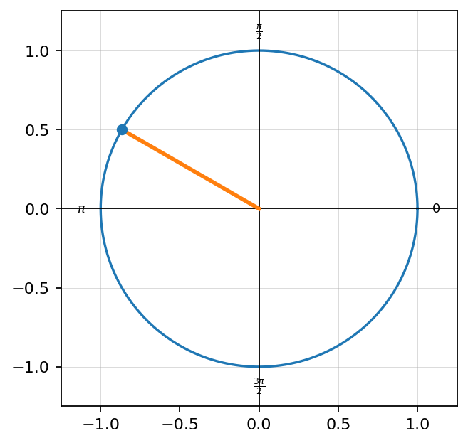
Find all angles in $0\le \theta<2\pi$ where $\cos\theta=-\frac12$.
Spiral Unit 3: The graph of $y=\sqrt{x+2}-1$ is shown. Determine its domain, range, and $x$-intercept.
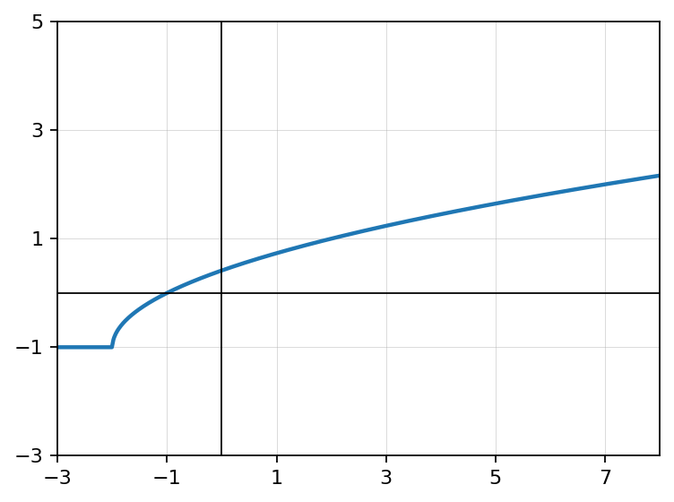
Formative Spiral Unit 2: Let $f(x)=x^2+1$ and $g(x)=2x-3$. Evaluate $f(g(2))$ and $g(f(2))$. Are they equal?
Warm Up Unit 4.1.3
The unit circle shows two related angles. Explain why $\sin\left(\frac{\pi}{6}\right)=\sin\left(\frac{5\pi}{6}\right)$ but $\cos\left(\frac{\pi}{6}\right)\ne \cos\left(\frac{5\pi}{6}\right)$.
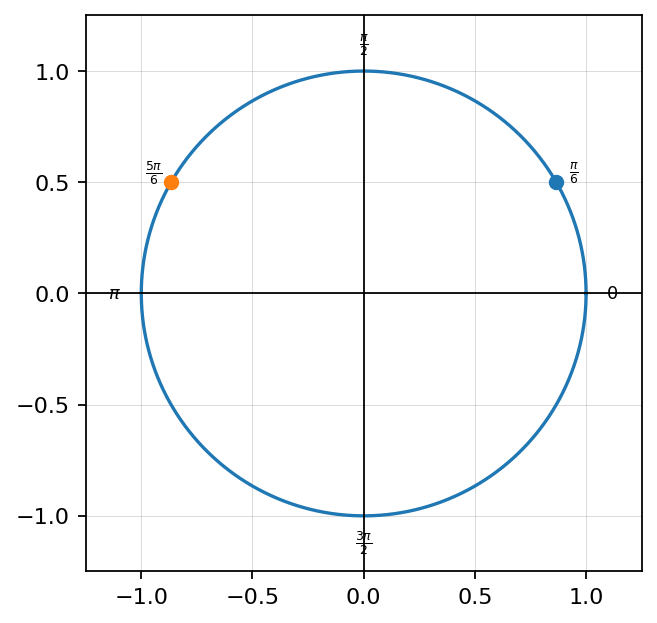
A student says, “If two angles have the same reference angle, then all six trig values must be the same.” Decide whether the claim is true. Use a specific counterexample or explanation.
Spiral Unit 3: A student solves $(x-4)^2=36$ and gives only $x=10$. Identify the error, solve correctly, and explain why both solutions should be checked.
Formative Spiral Unit 2: A function satisfies $f(-x)=-f(x)$ and is defined at $x=0$. Explain why the graph must pass through the origin.
Warm Up Unit 4.2.1
Simplify each expression.
- $1-a^2$ when $a=\frac35$
- $\frac{1}{\frac{2}{3}}$
- $\frac{x^2-9}{x-3}$, with $x\ne3$
If $\sin\theta=\frac35$ and $\cos\theta=\frac45$, calculate $\sin^2\theta+\cos^2\theta$.
Evaluate exactly using special angles.
- $\sin\left(\frac{\pi}{3}\right)$
- $\cos\left(\frac{\pi}{6}\right)$
- $\tan\left(\frac{\pi}{4}\right)$
Rewrite each reciprocal expression.
- $\frac{1}{\cos x}$
- $\frac{1}{\sin x}$
- $\frac{\sin x}{\cos x}$
Warm Up Unit 4.2.2
Use the unit circle idea shown to explain why $\sin^2\theta+\cos^2\theta=1$.
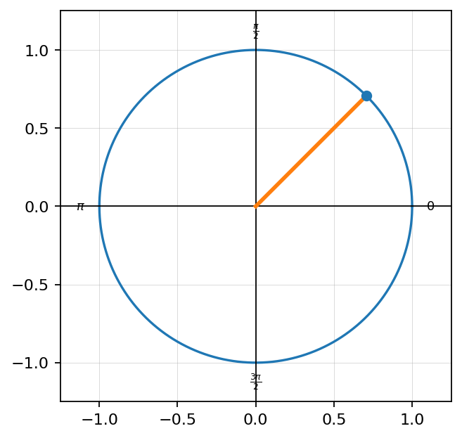
Simplify the expression using identities: $\frac{1-\cos^2 x}{\sin x}$.
Spiral Unit 3: Solve and check: $\sqrt{x+5}=x-1$.
Formative Spiral Unit 2: Let $f(x)=\sqrt{x+4}$ and $g(x)=\frac{1}{x-2}$. State the domain restrictions for $f+g$.
Warm Up Unit 4.2.3
A student claims $\sin(A+B)=\sin A+\sin B$. Use $A=30^\circ$ and $B=60^\circ$ to test the claim and explain the error.
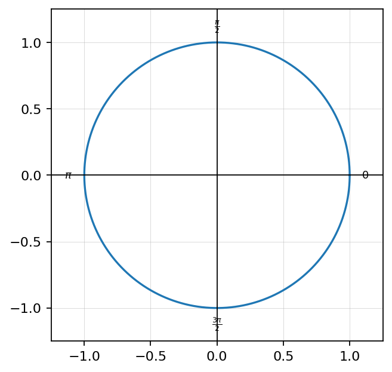
Verify the identity: $\frac{\tan x}{\sec x}=\sin x$. Show each rewrite clearly.
Spiral Unit 3: Use the graph to solve $\sqrt{x+4}=x-2$, then explain why graphing helps identify the valid solution.
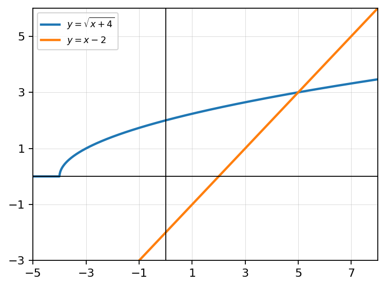
Formative Spiral Unit 2: Compare $(f+g)(x)$ and $f(g(x))$. Create simple functions where the two expressions give different values at $x=2$.
Warm Up Unit 4.3.1
Evaluate and simplify.
- $2\left(\frac{\sqrt2}{2}\right)\left(\frac{\sqrt2}{2}\right)$
- $1-2\left(\frac12\right)^2$
Simplify each expression.
- $\sqrt{\frac{1+\frac12}{2}}$
- $\sqrt{\frac{1-\frac12}{2}}$
If an angle is in Quadrant II, determine the signs of sine, cosine, and tangent.
Find $2\theta$ and $\frac{\theta}{2}$ when $\theta=\frac{5\pi}{6}$.
Warm Up Unit 4.3.2
The angle $\frac{\pi}{8}$ is half of $\frac{\pi}{4}$. Use a half-angle identity to find $\sin\left(\frac{\pi}{8}\right)$ exactly.
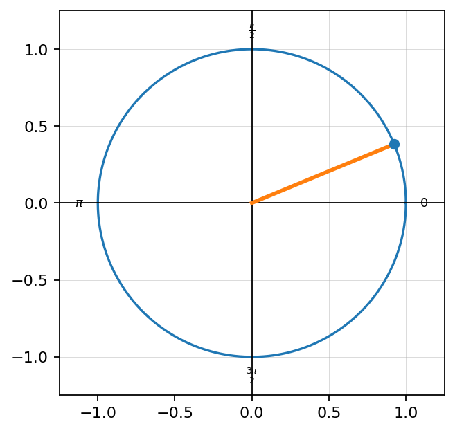
Use a double-angle identity to evaluate $\sin(2x)$ if $\sin x=\frac35$ and $\cos x=\frac45$.
Spiral Unit 3: Solve: $3(x-2)^3=81$. Verify your solution.
Formative Spiral Unit 2: Find the inverse of $f(x)=3x-7$ and verify using composition.
Warm Up Unit 4.3.3
A student uses $\cos(2x)=1-2\sin x$ instead of $\cos(2x)=1-2\sin^2 x$. Explain the error and show how it changes the result when $\sin x=\frac12$.
The graphs of $y=\sin x$ and $y=\sin(2x)$ are shown. Compare their periods and explain how the double-angle input changes the graph.
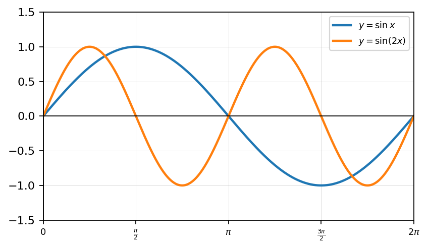
Spiral Unit 3: Design a square-root equation that creates one extraneous solution after squaring. Solve it and identify the extraneous solution.
Formative Spiral Unit 2: A student says every function has an inverse function. Use the horizontal line test or a counterexample to respond.
Warm Up Unit 4.4.1
For $y=2f(x-3)-1$, describe the vertical stretch, horizontal shift, and vertical shift.
Find the amplitude and midline of a sinusoidal graph with maximum $7$ and minimum $-1$.
The graph of $y=\sin x$ is shown. Identify the five key points from $0$ to $2\pi$.
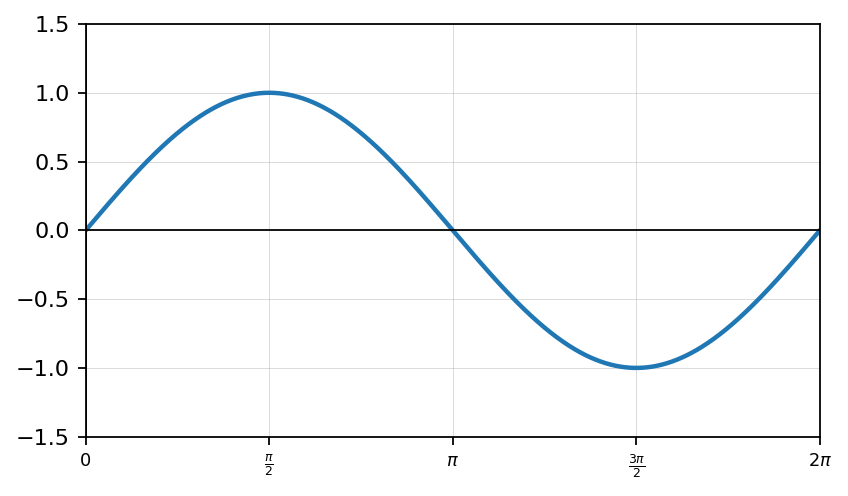
A function repeats every $6$ units. What is its period? Explain what “period” means in your own words.
Warm Up Unit 4.4.2
For the graph shown, identify amplitude, period, phase shift, and vertical shift.
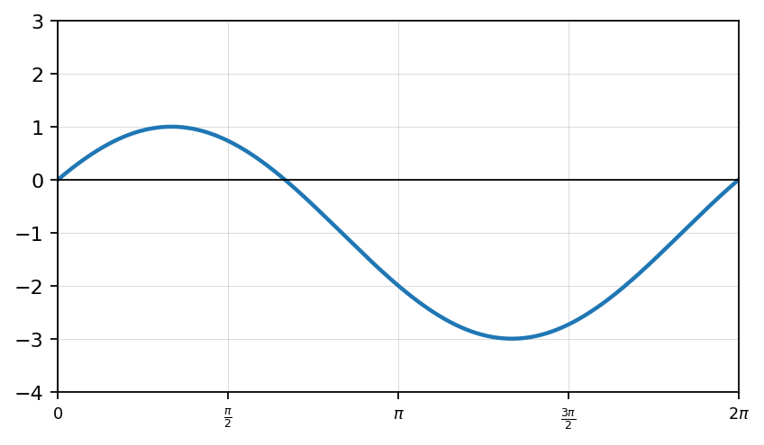
Write an equation for a cosine function with amplitude $3$, period $2\pi$, midline $y=2$, and maximum at $x=0$.
Spiral Unit 3: The graph of $y=\sqrt{x-1}+2$ is shown. Determine its domain, range, and starting point.
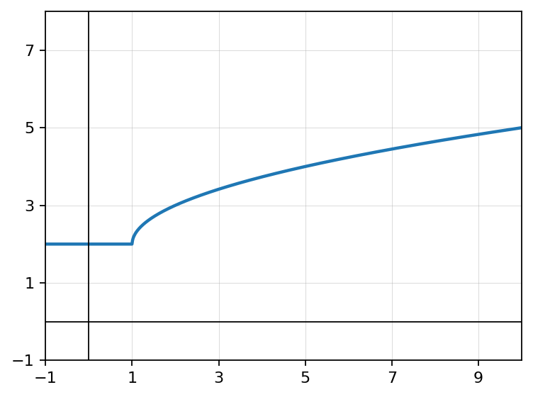
Formative Spiral Unit 2: Calculate the average rate of change of $f(x)=x^2-4x$ from $x=1$ to $x=5$.
Warm Up Unit 4.4.3
Analyze the graph shown. Write a possible sine equation and explain how each parameter matches the graph.
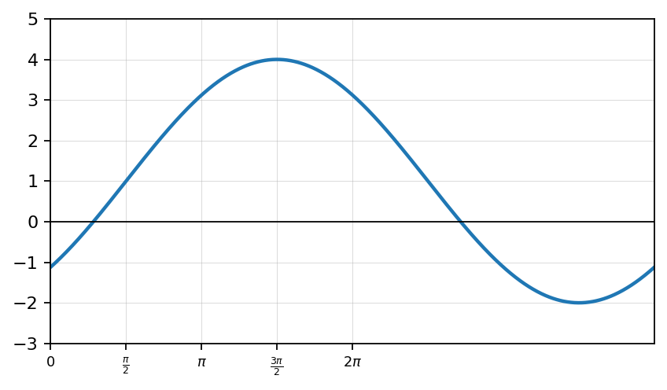
A sinusoidal function has maximum $10$, minimum $2$, and period $8\pi$. Write two possible equations, one using sine and one using cosine.
Spiral Unit 3: Compare $y=\sqrt{x}$ and $y=\sqrt[3]{x}$. Explain how their domains, ranges, and shapes differ.
Formative Spiral Unit 2: Explain why domain restrictions matter when simplifying $\frac{x^2-16}{x-4}$ to $x+4$.
Warm Up Unit 4.5.1
Find all angles in $0\le \theta<2\pi$ where $\sin\theta=\frac12$.
Use the unit circle to find all angles in $0\le \theta<2\pi$ where $\cos\theta=0$.

Solve the equation $2x-3=7$, then describe the inverse operation used.
Rewrite the interval $0\le \theta<2\pi$ using interval notation, then explain why the endpoint $2\pi$ is excluded.
Warm Up Unit 4.5.2
Use the graph to solve $\sin x=\frac12$ on $0\le x<2\pi$.
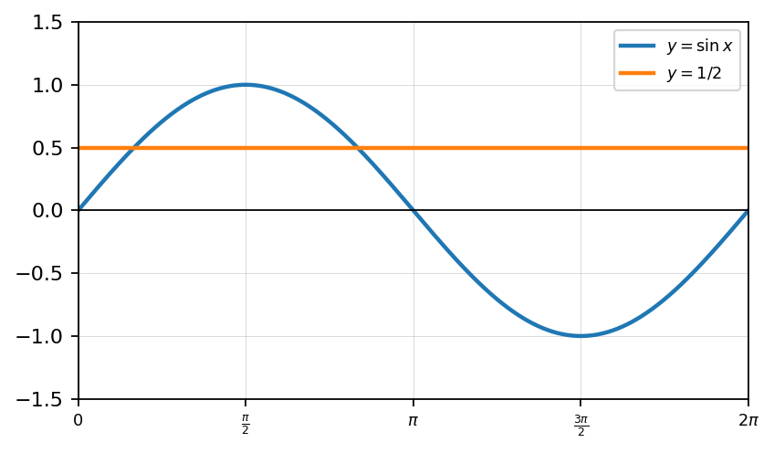
Solve exactly on $0\le \theta<2\pi$: $2\cos\theta+1=0$.
Spiral Unit 3: Solve and check: $\sqrt{2x+9}=x$.
Formative Spiral Unit 2: Let $f(x)=x^2$ restricted to $x\ge0$. Find $f^{-1}(x)$ and explain why the restriction matters.
Warm Up Unit 4.5.3
Use the graph to solve $\cos x=-\frac{\sqrt2}{2}$ on $0\le x<2\pi$, then confirm using the unit circle.
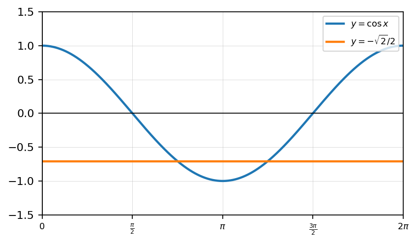
Solve on $0\le \theta<2\pi$: $2\sin^2\theta-\sin\theta=0$. Explain why factoring is useful.
Spiral Unit 3: A radical equation gives possible solutions $x=-2$ and $x=6$ after squaring. Explain why both must be checked in the original equation.
Formative Spiral Unit 2: A model uses $h(t)=4\sin(t)+6$. Interpret the meaning of the amplitude and vertical shift in context.